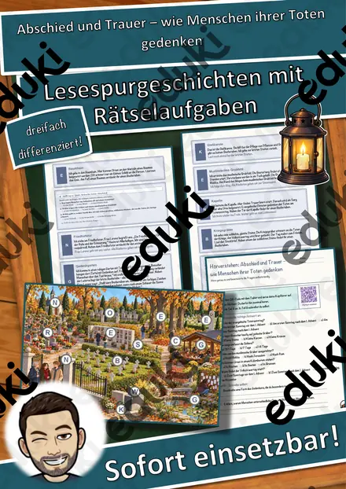
Abschied und Trauer – wie Menschen ihrer Toten gedenken – Lesespurgeschichte mit Rätselaufgaben (Klasse 9)
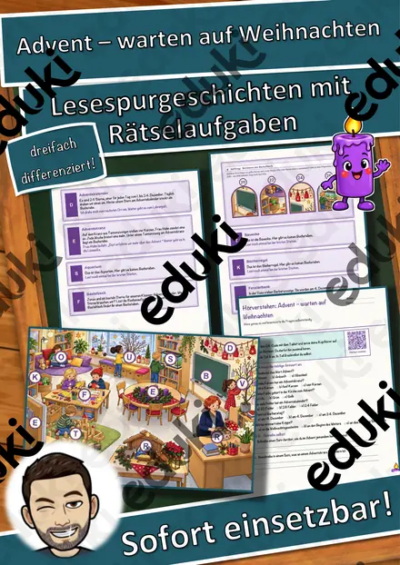
Advent – warten auf Weihnachten – Lesespurgeschichte mit Rätselaufgaben (Klasse 2)
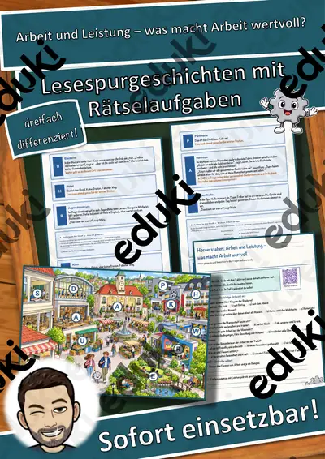
Arbeit und Leistung – was macht Arbeit wertvoll? – Lesespurgeschichte mit Rätselaufgaben (Klasse 9)

Aschermittwoch und Fastenzeit – vom Fasching bis Ostern – Lesespurgeschichte mit Rätselaufgaben (Klasse 6)

Barbarazweige – der Brauch am 4. Dezember – Lesespurgeschichte mit Rätselaufgaben (Klasse 3)

Bewusst konsumieren – die Reise eines T-Shirts – Lesespurgeschichte mit Rätselaufgaben (Klasse 8)

Das Frühlingsfest – Neujahr in China – Lesespurgeschichte mit Rätselaufgaben (Klasse 5)

Das Gewissen und die innere Stimme – Lesespurgeschichte mit Rätselaufgaben (Klasse 10)

Der Tag der Muttersprache – viele Sprachen in meiner Klasse – Lesespurgeschichte mit Rätselaufgaben (Klasse 5)
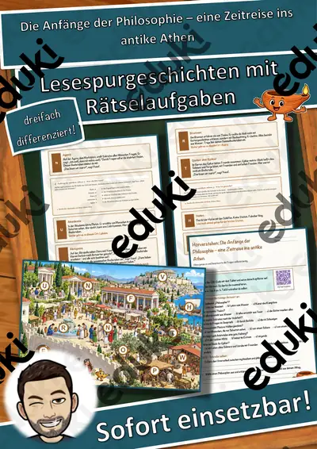
Die Anfänge der Philosophie – eine Zeitreise ins antike Athen – Lesespurgeschichte mit Rätselaufgaben (Klasse 10)

Die Sternsinger – Brauch am Dreikönigstag – Lesespurgeschichte mit Rätselaufgaben (Klasse 3)
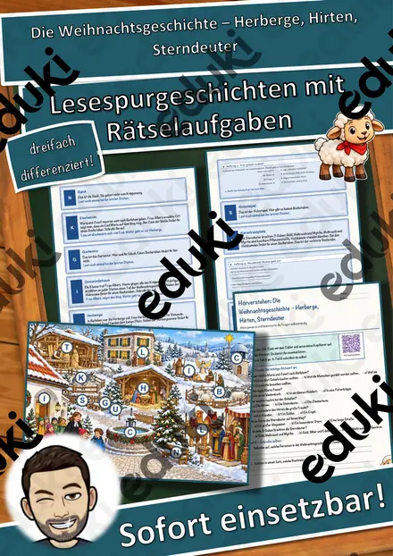
Die Weihnachtsgeschichte – Herberge, Hirten, Sterndeuter – Lesespurgeschichte mit Rätselaufgaben (Klasse 2)

Die lange Kulturnacht – was macht Kultur wertvoll? – Lesespurgeschichte mit Rätselaufgaben (Klasse 3)
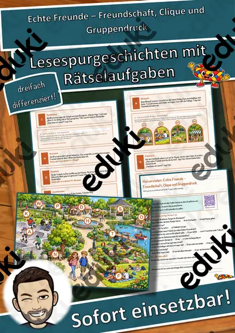
Echte Freunde – Freundschaft, Clique und Gruppendruck – Lesespurgeschichte mit Rätselaufgaben (Klasse 6)
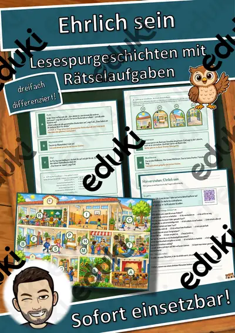
Ehrlich sein – Lesespurgeschichte mit Rätselaufgaben (Klasse 3)
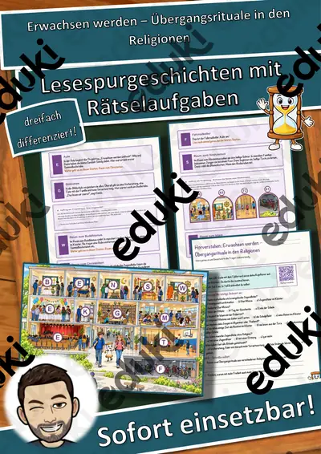
Erwachsen werden – Übergangsrituale in den Religionen – Lesespurgeschichte mit Rätselaufgaben (Klasse 7)

Fair wirtschaften – Wirtschaftsethik zwischen Gewinn und Verantwortung – Lesespurgeschichte mit Rätselaufgaben (Klasse 10)

Freiheit und Verantwortung – Lesespurgeschichte mit Rätselaufgaben (Klasse 10)
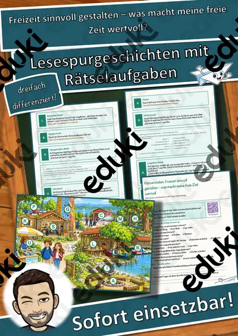
Freizeit sinnvoll gestalten – was macht meine freie Zeit wertvoll? – Lesespurgeschichte mit Rätselaufgaben (Klasse 6)
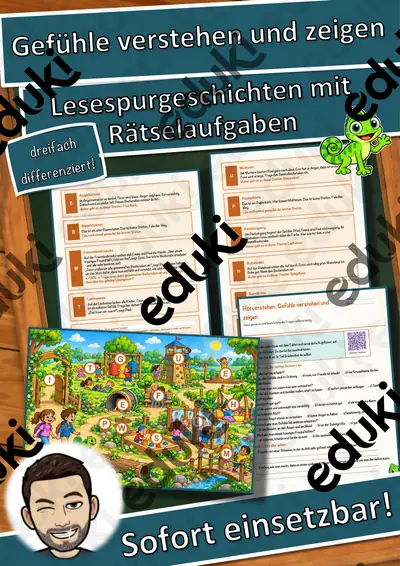
Gefühle verstehen und zeigen – Lesespurgeschichte mit Rätselaufgaben (Klasse 3)
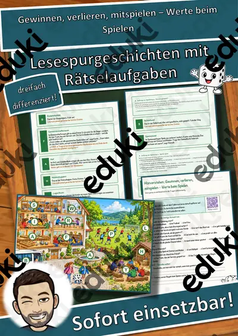
Gewinnen, verlieren, mitspielen – Werte beim Spielen – Lesespurgeschichte mit Rätselaufgaben (Klasse 5)

Gute Vorsätze – was ich ändern will – Lesespurgeschichte mit Rätselaufgaben (Klasse 8)
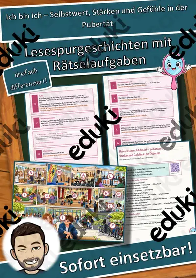
Ich bin ich – Selbstwert, Stärken und Gefühle in der Pubertät – Lesespurgeschichte mit Rätselaufgaben (Klasse 7)
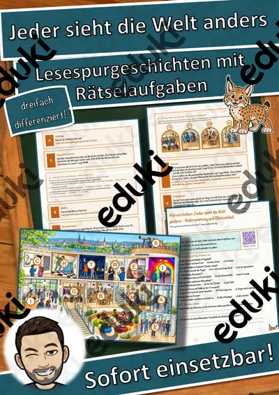
Jeder sieht die Welt anders – Wahrnehmung und Blickwinkel – Lesespurgeschichte mit Rätselaufgaben (Klasse 5)

Kinderrechte weltweit – jedes Kind zählt – Lesespurgeschichte mit Rätselaufgaben (Klasse 3)
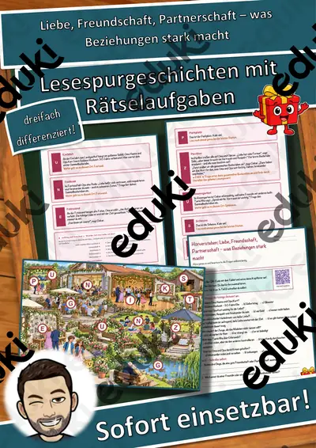
Liebe, Freundschaft, Partnerschaft – was Beziehungen stark macht – Lesespurgeschichte mit Rätselaufgaben (Klasse 9)

Materialpaket Advent und Weihnachten für die 3. Klasse: 8 Lesespurgeschichten mit Rätselaufgaben (Barbarazweige, Lebkuchen, Santa Lucia, Sternsinger & mehr)

Materialpaket Feste im Winter für die 2. Klasse: 6 Lesespurgeschichten mit Rätselaufgaben (Sankt Martin, Nikolaus, Advent, Weihnachten & Silvester)
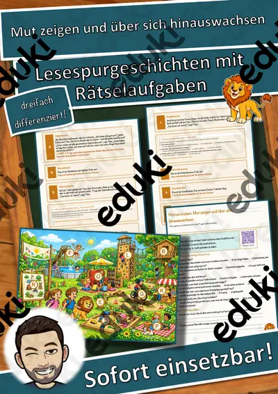
Mut zeigen und über sich hinauswachsen – Lesespurgeschichte mit Rätselaufgaben (Klasse 4)
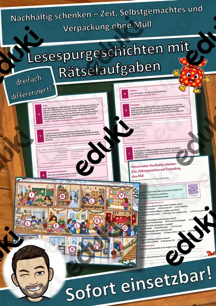
Nachhaltig schenken – Zeit, Selbstgemachtes und Verpackung ohne Müll – Lesespurgeschichte mit Rätselaufgaben (Klasse 6)
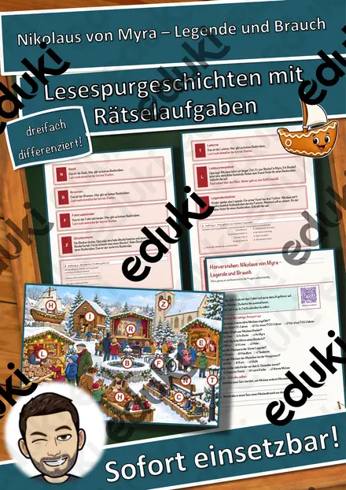
Nikolaus von Myra – Legende und Brauch – Lesespurgeschichte mit Rätselaufgaben (Klasse 2)
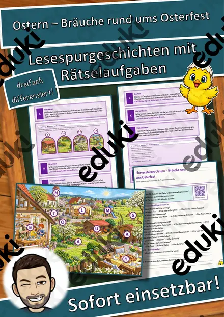
Ostern – Bräuche rund ums Osterfest – Lesespurgeschichte mit Rätselaufgaben (Klasse 2)

Rituale im Alltag – was uns jeden Tag begleitet – Lesespurgeschichte mit Rätselaufgaben (Klasse 1)

Rollenbilder im Wandel – Gleichberechtigung von Frau und Mann – Lesespurgeschichte mit Rätselaufgaben (Klasse 10)
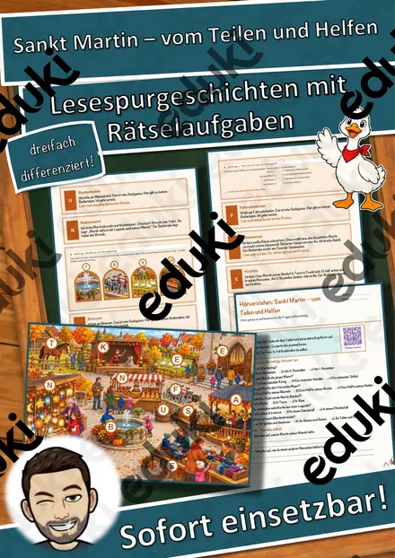
Sankt Martin – vom Teilen und Helfen – Lesespurgeschichte mit Rätselaufgaben (Klasse 2)

Santa Lucia – das Lichterfest im Dezember – Lesespurgeschichte mit Rätselaufgaben (Klasse 3)

Sich für andere einsetzen – Lesespurgeschichte mit Rätselaufgaben (Klasse 8)
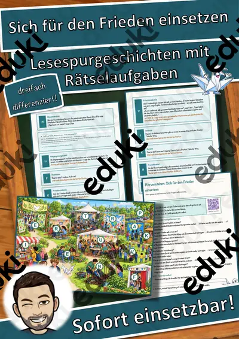
Sich für den Frieden einsetzen – Lesespurgeschichte mit Rätselaufgaben (Klasse 9)
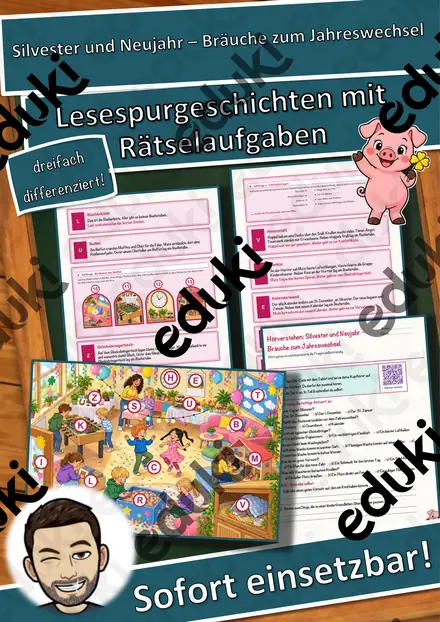
Silvester und Neujahr – Bräuche zum Jahreswechsel – Lesespurgeschichte mit Rätselaufgaben (Klasse 2)

Stopp sagen und Hilfe holen – Grenzen erkennen – Lesespurgeschichte mit Rätselaufgaben (Klasse 1)
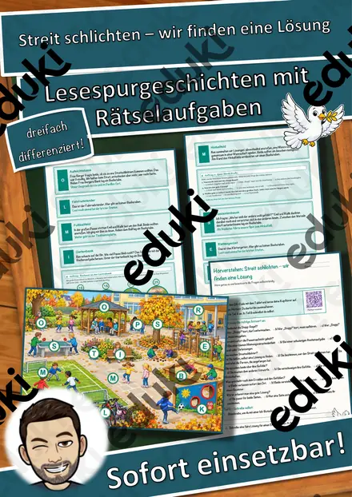
Streit schlichten – wir finden eine Lösung – Lesespurgeschichte mit Rätselaufgaben (Klasse 3)
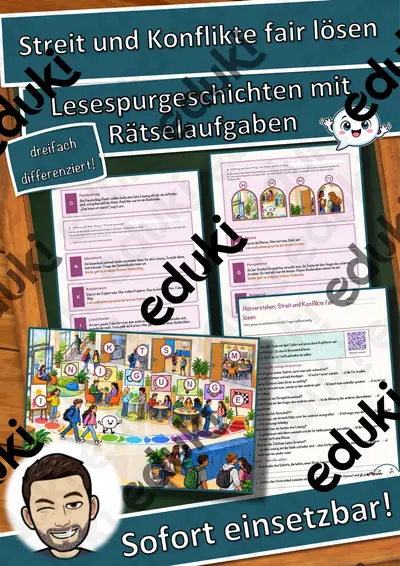
Streit und Konflikte fair lösen – Lesespurgeschichte mit Rätselaufgaben (Klasse 7)
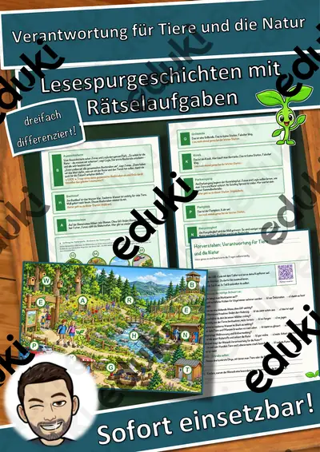
Verantwortung für Tiere und die Natur – Lesespurgeschichte mit Rätselaufgaben (Klasse 7)

Warum Regeln wichtig sind – Lesespurgeschichte mit Rätselaufgaben (Klasse 3)

Was darf die Medizin? – Grundfragen der Medizinethik – Lesespurgeschichte mit Rätselaufgaben (Klasse 10)
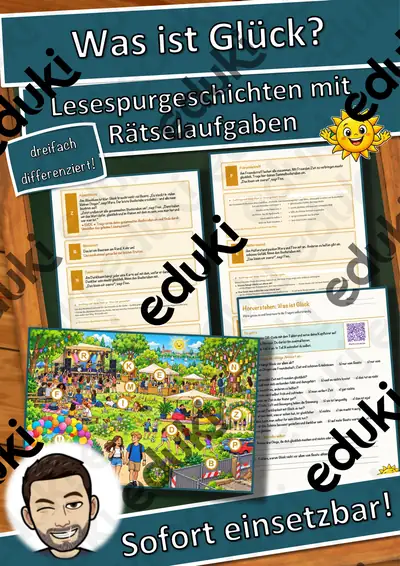
Was ist Glück? – Lesespurgeschichte mit Rätselaufgaben (Klasse 6)
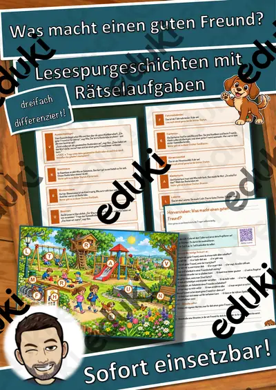
Was macht einen guten Freund? – Lesespurgeschichte mit Rätselaufgaben (Klasse 3)
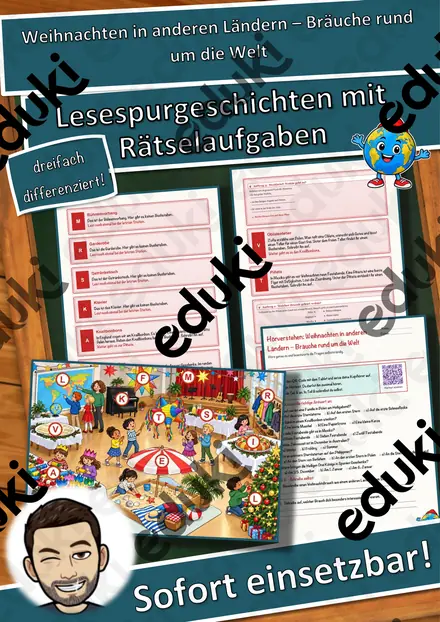
Weihnachten in anderen Ländern – Bräuche rund um die Welt – Lesespurgeschichte mit Rätselaufgaben (Klasse 2)

Werden und Vergehen – ein Jahr im Garten von Oma Rosi – Lesespurgeschichte mit Rätselaufgaben (Klasse 3)
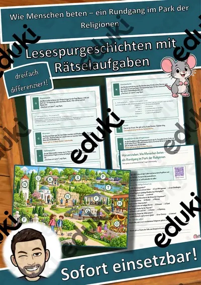
Wie Menschen beten – ein Rundgang im Park der Religionen – Lesespurgeschichte mit Rätselaufgaben (Klasse 6)

Wofür lohnt es sich zu leben? – Sinnsuche im Jugendalter – Lesespurgeschichte mit Rätselaufgaben (Klasse 8)
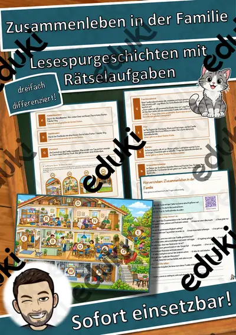
Zusammenleben in der Familie – Lesespurgeschichte mit Rätselaufgaben (Klasse 5)